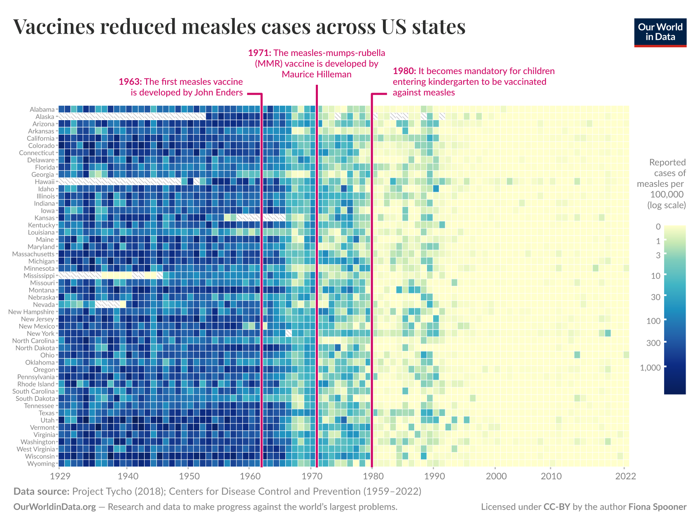

La datavisualisation

Une version interactive est disponible sur le site du Wall Street Journal.
Actus du réseau
La troisième journée du réseau 📅 1 décembre - La Tréso (Malakoff)
Réservez votre 1er décembre ! Pour la troisième année consécutive, le SSPLab organise la journée du réseau pour rassembler les data-scientists de la statistique publique. Au menu : présentation de projets innovants, retour d’expérience et moments d’échanges informels (autrement appelés “pots” 🎉).
Comme les années précédentes, l’événement sera en présentiel et à distance pour permettre à tous de participer. Les détails seront publiés sur le site du réseau et si jamais vous voulez déjà vous inscrire alors que l’agenda n’est pas finalisé, c’est possible ici.
Le site du réseau évolue
L’inscription à la liste de diffusion a été revue et utilise maintenant Grist. Pour s’inscrire à la liste de diffusion, c’est par ici. Une fois inscrit, vous pouvez créer un compte sur Grist et vous connecter directement sur l’annuaire pour mettre à jour vos données, demander votre désinscription en cochant la case “Supprimez mon compte”.
Par ailleurs, le site du réseau devrait évoluer dans les prochaines semaines. Il va s’étoffer pour présenter plus de projets en cours et permettre ainsi à tout un chacun de savoir qu’un projet existe et pouvoir échanger entre pairs. Si vous souhaitez valoriser un projet, n’hésitez pas à nous le faire savoir !
Actualités
Voici une liste de sujets d’actualité depuis cet été jugés subjectivement intéressants.
IA
Comme toujours, une flopée d’articles a été publiée sur l’IA : le nouveau modèle d’OpenAI (GPT-5) a été déployé cet été, l’usage de l’IA se développe, des craintes se font entendre sur l’existence d’une bulle financière et, avec l’augmentation de son utilisation, de plus en plus de failles de sécurité liées sont découvertes. Un petit florilège rapide, non exhaustif :
En France, l’IA est de plus en plus utilisée par les entreprises d’après une étude de l’Insee. En 2024 ainsi, une entreprise sur dix utilise l’IA, et ce phénomène concerne particulièrement 33% des grandes entreprises et 42% de celles de l’information. L’usage de l’IA augmente de 4 points par rapport à 2023. L’IA est par ailleurs légèrement moins utilisée par les entreprises en France que dans l’Europe, où 13% des entreprises disent utiliser l’IA en 2024.
Sur l’impact de l’IA, notamment sur le travail et la productivité, de nombreuses études continuent d’être publiées. Petit disclaimer, la technologie évolue encore très vite : depuis son arrivée il y a moins de trois ans, les bugs relevés au début ne sont plus du tout d’actualité aujourd’hui : les images sont de bien meilleure qualité, des RAG ont été mis en place … Face à un domaine aussi changeant, les résultats des études varient donc encore beaucoup.
- Ceci étant dit, les études montrent globalement que l’IA permettrait d’améliorer l’efficacité des travailleurs, particulièrement des non-experts, et réduit les inégalités de performance, même si les résultats sont contrastés. Selon cette étude, l’IA commence à avoir un impact négatif sur l’emploi, quand celle-ci estime à l’inverse que les gains de productivité pour les développeurs sont sur-estimés.
- L’usage de l’IA serait particulièrement efficace pour effectuer des tâches moyennement rares, l’humain restant plus efficace sur les tâches courantes (cf. par exemple ce papier). Par ailleurs, sur les tâches complexes ou rares, l’IA serait largement moins efficace que l’humain et produirait des résultats de qualité moindre (cf. ce papier).
Concernant la technologie en soit, des chercheurs ont réussi, à partir d’un petit modèle d’IA générative, à classifier du texte aussi efficacement qu’avec un gros modèle et nécessitant bien moins de données. Pour ce faire, ils ont utilisé un modèle de régression pénalisée (type Lasso/Ridge) sur la représentation numérique sous-jacente du texte. Plus de détails dans leur article.
De nombreux articles font craindre l’existence d’une bulle financière autour de l’IA.
- Edward Zitron, un publiciste britannique, auteur et podcasteur, rappelle sur son blog toutes les raisons pour laquelle une bulle existerait actuellement sur l’IA. Il rappelle notamment que les 560Md$ investis par les GAFAM dans l’IA n’ont généré que très peu de bénéfices et que le seul gagnant est Nvidia. Comme le dit le proverbe, “Pendant la ruée vers l’or, ce ne sont pas les chercheurs d’or qui se sont le plus enrichis, mais les vendeurs de pelles et de pioches”.
- L’adoption de l’IA par les entreprises prendrait par ailleurs plus de temps qu’anticipé et n’aurait pas des rendements aussi rapides qu’espéré.
- Plus généralement, des articles, comme cet article de Forbes, rappellent que l’IA reste très utilisée aujourd’hui et que, même si aujourd’hui des investissements sont fait vers des projets peu productifs, l’adoption de nouvelles technologies prend du temps. Les articles citent beaucoup l’exemple d’internet, et de la bulle du début des années 2000 : les attentes du marché étaient trop hautes par rapport à tout le travail qu’il restait à faire, et cela n’empêche pas que aujourd’hui, 25 ans après cette bulle, les investissements dans le réseau internet ont permis de changer la société.
Enfin, avec l’augmentation de son utilisation, la sécurité de la technologie est un enjeu qui est de plus en plus discuté, au-delà du détournement à des fins illégales qui attend toute innovation numérique :
- Des données confidentielles de Microsoft ont fuité après le piratage d’agents Copilot. Les hackeurs ont ainsi reçu par mail des extraits des contacts et des ventes de Microsoft.
- Selon le rapport d’Anthropic sur les menaces liées à l’IA, cette technologie a notamment été détournée pour :
- s’assurer des postes bien payés pour des Nord-Coréens, qui leur ont permis de rapatrier les capitaux au pays ;
- massifier les fraudes aux données personnelles ;
- automatiser les attaques par ransomware.
Parquet
- Le site Hyperparam permet d’afficher très rapidement des données Parquet volumineuses sur son explorateur web très rapidement (en moins de 500ms). Pour la tuyauterie, tout est expliqué sur ce blog.
Kubernetes
- Comment détecter facilement des pods Kubernetes peu actifs et les désactiver? Un début de processus a été publié sur Devops.dev.
Nouveautés
- Une nouvelle version des notebooks Observable est disponible en pré-production, avec un kit open source pour générer des notebooks et des sites statiques et une application pour Mac pour éditer ses notebooks en local, intégrant de manière plus fluide les apports de l’IA. Plus de détails par ici et une galerie d’exemples de sites.
- L’université allemande de Hanovre a publié une base d’embedding des entités d’Openstreetmap directement utilisable pour entraîner des modèles de machine learning.
- Selon une étude de Posit, le meilleur modèle d’IA pour aider à coder en Python serait ceux d’OpenAI (o3-mini, o4-mini) ou d’Anthropic (Claude Sonnet 4).
Fun
- Vous vous êtes déjà demandé comment résoudre un SUTOM avec les dépendances de Python ? Non ? Et bien quelqu’un a trouvé le moyen de résoudre des Sudoku et des Motus grâce à cela ! Tout est expliqué ici
- Avez-vous déjà vu une intelligence artificielle jouer au Loup-Garou ? Des étudiants de l’ENSAE
se sont amusésont étudié quelles IA étaient meilleures au jeu du Loup-Garou. Ce jeu nécessite en effet de mentir, de convaincre, et d’adapter sa stratégie pour survivre (pour les villageois) ou tuer tous les villageois (pour les loup-garous). A la fin, GPT-5 gagne dans 97 % des 60 matchs joués, contre 15% pour GPT-OSS-120b.
Vous voyez d’autres sujets d’actualité intéressants ? N’hésitez pas à les partager sur le groupe Tchap 💬 directement !
L’interview
Première interview, je propose donc humblement de m’auto-interviewer pour lancer ce format et de comparer les questions que j’ai trouvées avec celles proposées par une IA.
Première interview avec Nicolas, qui travaille à l’Insee (SSPLab)
| Peux-tu te présenter? | De formation ingénieur, j’ai travaillé huit ans dans l’administration publique avec un parcours que certains ont dit plutôt atypique (ce n’est pas totalement mon avis 🙃). J’ai notamment travaillé au sein de la DG Trésor et à la Commission européenne, sur des sujets de prévision de finances publiques, de négociations européennes et de suivi de la Banque centrale européenne. Le traitement de la donnée n’a pas été jusque-là au centre de mes postes mais l’importance des outils et de traitement plus robuste aurait facilité la vie à certains moments. J’arrive donc à l’Insee pour la première fois mais je suis content de “découvrir la maison”. A l’Insee, je travaille au sein du SSPLab, le laboratoire de l’innovation en data sciences de l’Insee. L’équipe est chargée de faire de la veille et d’épauler les équipes métiers dans leurs projets. J’ai tout particulièrement l’honneur de succéder à Lino au poste d’animateur du SSPHub, big up à lui pour tout ce qu’il a fait ces trois dernières années ! |
| Peux-tu donner un conseil que tu aurais aimé recevoir en lien avec la data ? | Question difficile, étant donné que je n’ai pas mené |
| As-tu un projet qui a particulièrement marché, et pourquoi a-t-il marché ? A l’inverse, as-tu un projet qui n’a pas marché et pourquoi ? | J’avais codé des petits programmes pour m’aider dans mon travail quotidien, sans rapport direct avec la donnée. Ce qui a aidé dans les deux cas c’est que le besoin métier était bien défini et bien compris, puisque j’étais à la fois le métier et le développeur. Cependant, ces programmes faisaient partie d’un shadow IT qui n’a pas dû me survivre bien longtemps. J’ai quand même réussi à pousser un programme qui faisait du publipostage jusqu’à sa mise en production. À ma surprise, c’est la phase de déploiement qui a été bien plus longue que la phase de développement : cela a dû me prendre quelques jours de code contre plusieurs semaines avant le déploiement. |
| Dans quel domaine le service public pourrait être aidé par une utilisation plus importante des données ? | Un usage plus important de la donnée serait fort bénéfique pour la simplification des démarches pour les citoyens, permettre de diminuer le non-recours aux subventions et différents dispositifs publics tout en renforçant la qualité des données échangées entre administrations. |
| La dernière découverte technologique qui t’a marqué | J’avais un peu laissé de côté R Markdown depuis huit ans. En revenant dans le domaine de la data, je découvre à quel point ce milieu a évolué grâce à Posit, Quarto et l’apport de tous ces projets open source, auxquels des gens contribuent souvent naturellement. L’open source, c’est un peu comme les pompiers ou le secours en mer : ce sont des bénévoles qui font tenir et maintiennent des outils extraordinaires. Et plus récemment encore avec ma prise de poste à l’Insee, la découverte d’Onyxia, de duckDB et de Parquet m’ont aussi marqués. |
L’interview à laquelle vous avez échappé
Quelle est la plus-value de l’IA par rapport à un travail humain ? J’ai comparé les questions que j’avais trouvées avec des idées produites par une IA. Voici les questions qu’il m’a proposées, que j’ai proposé de ne pas suivre. Remarquez, ces questions sont le résultat de deux ou trois échanges avec l’IA, je n’y ai pas passé beaucoup plus de temps.
Voici une proposition de questions adaptées à des data scientists ou des managers de data scientists travaillant dans l’administration publique :
Formations et influences “Quelle formation ou influence majeure a façonné votre approche des données et de la gestion dans l’administration ?”
Expériences professionnelles “Quelles ont été les étapes clés de votre carrière dans l’administration qui ont influencé votre façon de gérer ou d’analyser les données ?”
Motivations et passions “Qu’est-ce qui vous motive le plus dans l’analyse ou la gestion des données au sein de l’administration publique ?”
Réalisations majeures “Quels sont vos principaux accomplissements en matière de gestion ou d’analyse de données dans votre rôle actuel ?”
Développement personnel “Quels défis spécifiques aux données avez-vous rencontrés dans le secteur public et comment les avez-vous surmontés ?”
Projets actuels “Sur quels projets liés aux données travaillez-vous actuellement, et qu’est-ce qui les rend particulièrement intéressants ou innovants ?”
Regrets ou aspirations “Y a-t-il des projets ou réalisations en lien avec les données que vous auriez aimé accomplir dans votre carrière mais qui ne se sont pas concrétisés ?”
Vision future “Comment voyez-vous l’évolution de l’importance des données dans l’administration publique dans les années à venir, et quel rôle aimeriez-vous y jouer ?”
Conseils aux jeunes générations “Quel conseil donneriez-vous à un jeune professionnel qui souhaite devenir data scientist ou manager de data scientists dans le secteur public ?”
Philosophie personnelle “Si vous deviez partager une philosophie ou un credo concernant la gestion ou l’analyse des données dans l’administration, quelle serait-elle ?”
Ces questions devraient aider à explorer les nuances spécifiques du travail des data scientists et de leurs managers dans le secteur public. Si vous souhaitez ajuster davantage ou ajouter des thèmes spécifiques, n’hésitez pas à me le faire savoir !